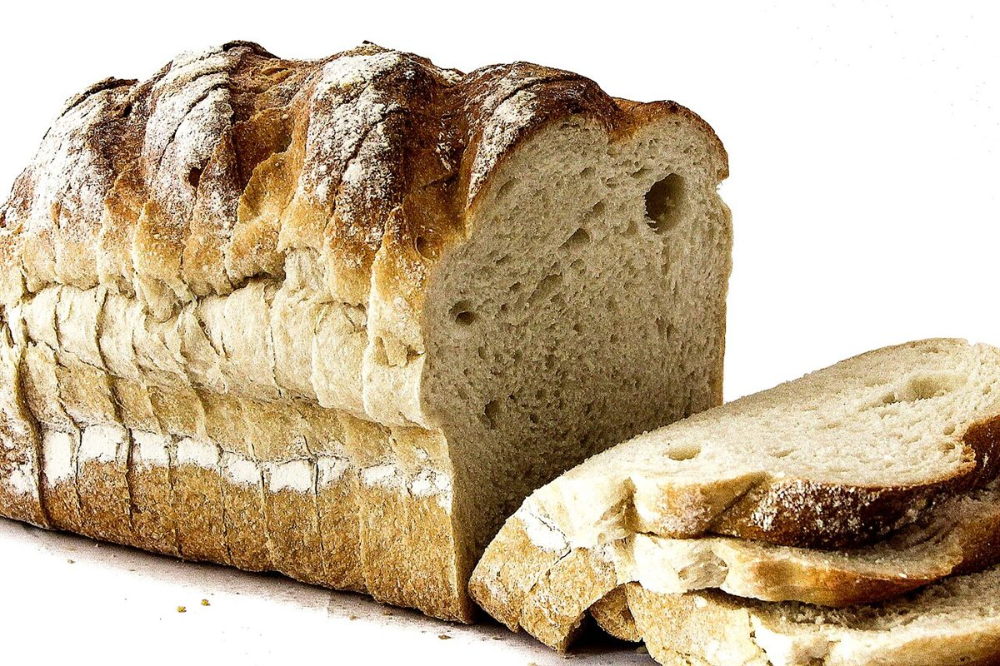
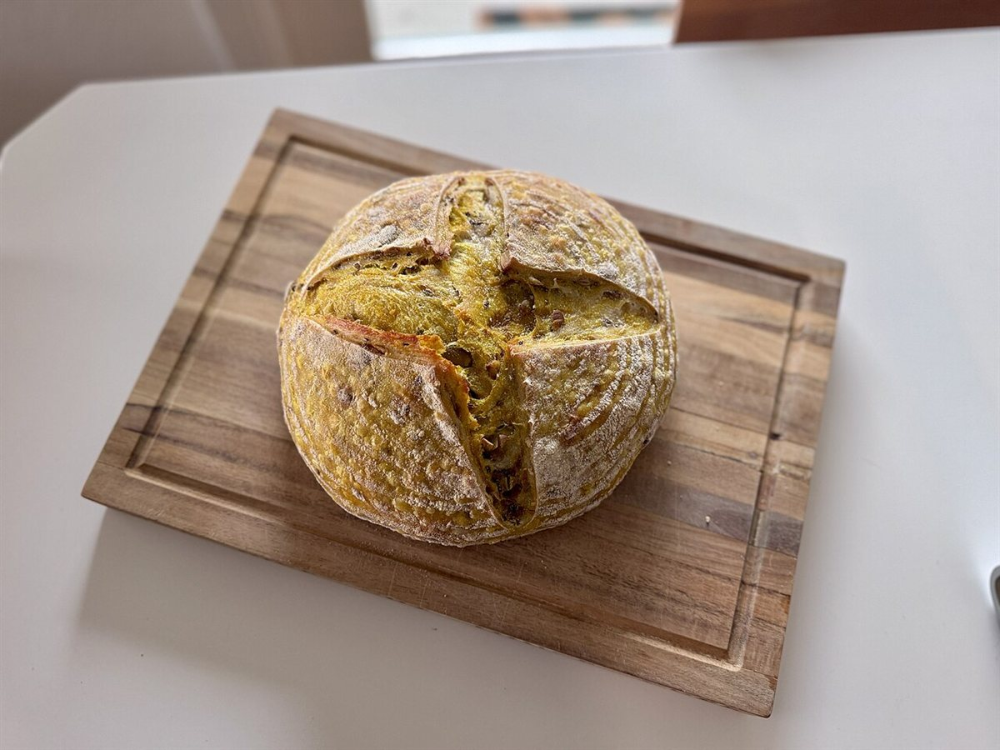
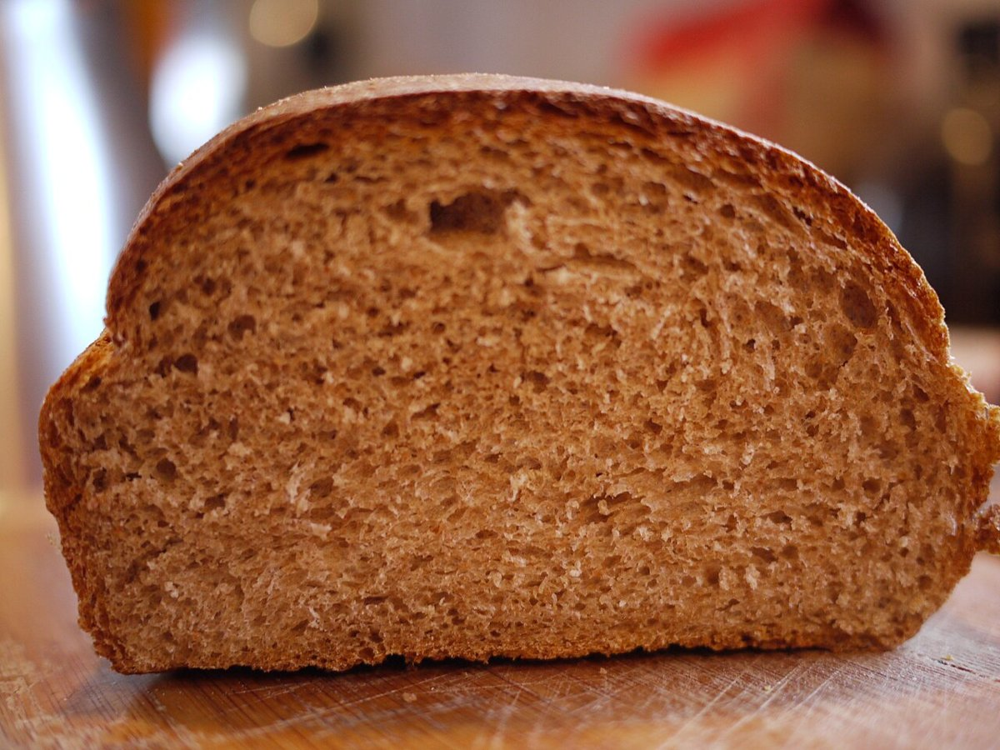

兵庫県多可郡多可町中区 / パン屋
パン屋
coron
ころんとやさしい、小さなパン屋。
愛犬の名前から生まれた屋号。播州地卵や国産素材で、体にやさしいパンを焼いています。

お店のこと
「パン屋 coron」は、兵庫県多可郡多可町中区奥中にある小さなパン屋です。2024年4月に開店したと紹介されています。
屋号は、お店の愛犬の名前「コロン」に由来するとされています。運が良ければ、愛犬のコロンに会えるかもしれません。
播州地卵や国産素材を使い、体にやさしいパンを焼いています。特に食パンにこだわり、仕込み水に牛乳を使ってほのかな甘みを出しているそうです。
※公開情報をもとにした紹介です。まるみのあるやわらかな配色は、制作側のイメージです。

パン
確認できた商品は食パンとたまごサンドです。そのほかの品ぞろえ・価格は準備中です。写真はすべてイメージです。
イメージ写真: Fresh made bread 06 / FranHogan / CC BY-SA 4.0(フリー素材・イメージ)

食パン
牛乳を仕込み水に使った、ほのかに甘い食パン。
イメージ写真: Tin Loaf - one slash in the crust / Mike Finn / CC BY 2.0(フリー素材・イメージ)
食パンのイメージ
やさしい甘みの食パンを、厚めに切って。
イメージ写真: Ten brown eggs / EstherDje / CC BY-SA 4.0(フリー素材・イメージ)
たまごサンド
播州地卵を使い、食パンタイプとホットドッグタイプの2種類があるそうです。

| 営業時間 | 10:00〜18:00(売り切れ次第終了) |
|---|---|
| 定休日 | 月曜・火曜(祝日の場合は営業し、翌日がお休み) |
| 価格 | 準備中 |
| 電話 | 準備中 |
営業時間・定休日は公開情報によるものです。最新の状況はInstagramでご確認ください。
パンのイメージ






口コミ
以下はイメージ例です(制作側が創作したもので、実在のお客様の声ではありません)。
イメージ例
食パンがほんのり甘くて、そのまま食べてもおいしい。朝ごはんが楽しみになりました。
イメージ例
たまごサンドのたまごの味がしっかり。やさしい味で、またお願いしたいです。
イメージ例
小さなお店であたたかい雰囲気。立ち寄って、つい多めに買ってしまいました。
アクセス
| 住所 | 〒679-1107 兵庫県多可郡多可町中区奥中５６６−１ |
|---|---|
| 電話 | 準備中 |
| @80_coron_08 |